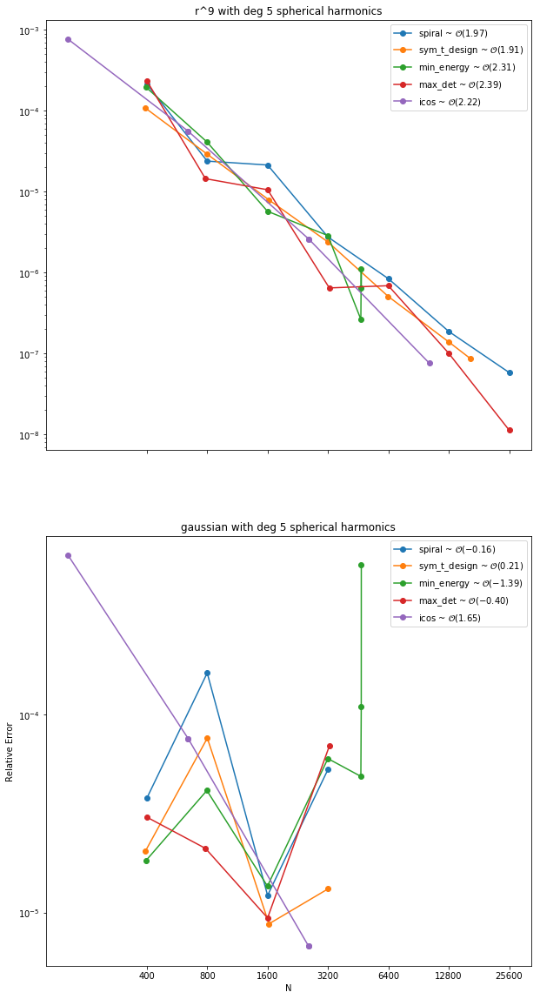
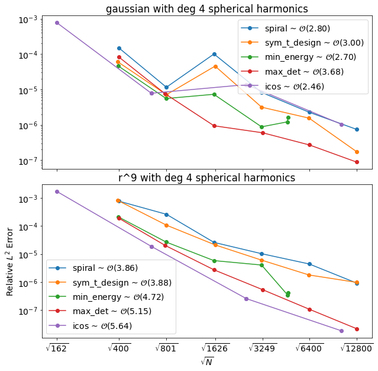
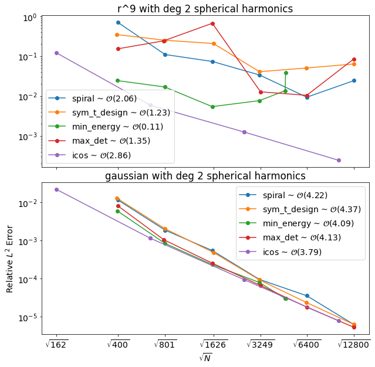
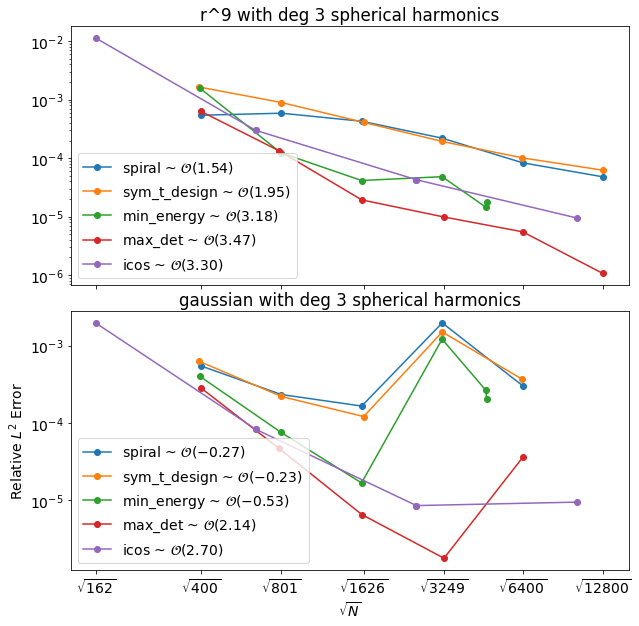
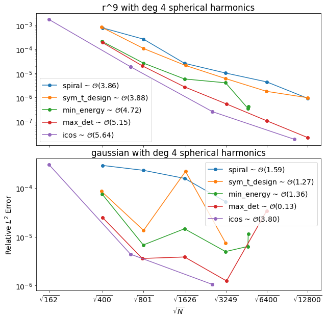

- Sage's Tasks
- Code
- Research
- Writing
- Misc
- Why does the gaussian give some singular stencils?
- Meeting Followup
- Singular Stencils for the Gausian
- Order of Convergence
- References
We reviewed the error plots in the followup to the previous meeting. We made some interesting observations and asked some questions about why the plots using the gaussian RBF do not converge, but maintain a steady error (more or less) regardless of the number of points used.
Sage's Tasks
Code
- Implement the RBF Symmetric OGr method.
Change order calculation to best fit and plot vs $\sqrt{N}$.- Implement time-stepping.
- Improve performance of the
projection methodand OGr (low orderand high order). Change website compliation to correctly show recent activity.
Research
Investigate why the gaussian RBF stencils are sometimes singular.- Research the Skeel Condition Number[1].
- Research sphereical harmonics.
Avoiding loops in numpy. General numpy efficiency.
Writing
- Write the theorem for exactness.
- Write RBF-FD article.
- Write RBF-FD Projection Method article.
- Write RBF-OGr article.
- Write Numpy Efficiency article. (matrx of vectors)
Misc
- Check on funding for the PNWNAS.
- Register for the GRE.
- Select PhD programs.
Why does the gaussian give some singular stencils?
The plots below show the errors in solving the steady state surface diffusion on the sphere with a a forcing function that is the sum of seven gaussians, using $r^9$ and the gaussian when augmented with shperical harmonic basis terms up to degree5. The plots below show the same test but with a forcing function that is the sum of seven gaussians. In the plot, there are node sets for which the error is not calculated for the gaussian RBF but is for $r^9$. This is because some (at least one) of the RBF-FD stencils for the gaussian were singular and thus were skipped. This should not be the case. We expect that the cause is due to the way we choose an optimized shape parameter. Further investigation is needed.
Meeting Followup
Singular Stencils for the Gausian
The singular stencils were caused by a poor choice of shape parameter. The optimization subroutine was converging, however it was getting trapped in local minima near $\varepsilon = 0$. For larger values of $n$ we expect $\varepsilon$ to be larger rather than smaller. Specifying a starting interval for the optimization algorithm discourages this, and gives stencils on the edge of ill-conditioning. The gaussian graph below show the new errors and convergence rates compared to the PHS RBFs.
Order of Convergence
The order of convergence was corrected to compare the error to $\sqrt{N}$. These are the corrected plots shown in the meeting notes on 9/6/2018 for the fourth degree spherical harmonic forcing function (20th sphereical harmonic), using $r^9$ and the gaussian when augmented with shperical harmonic basis terms up to degrees 2, 3, and 4.
  References
- Nicholas J. Higham. Accuracy and Stability of Numerical Algorithms. University of Manchester, 2002. URL: https://epubs.siam.org/doi/abs/10.1137/1.9780898718027.fm, arXiv:https://epubs.siam.org/doi/pdf/10.1137/1.9780898718027.fm, doi:10.1137/1.9780898718027.fm.